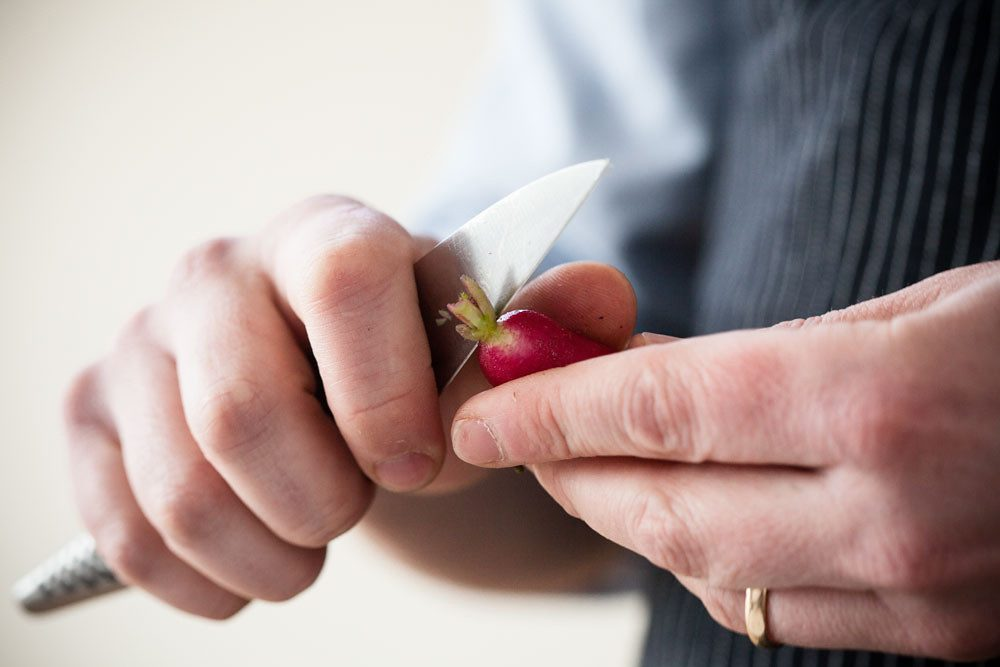

About PrepFuel
Meal prep for real life: small kitchens, tight budgets, and 30 minutes or less.

Good food starts with real ingredients and a sharp knife.
Why PrepFuel Exists
Most meal prep advice assumes you have a big kitchen, a big budget, and a free Sunday afternoon. PrepFuel is built for the opposite: people who want to eat high-protein food, don't want to spend $12 on lunch every day, and don't have 3 hours to spend cooking on the weekend.
Every plan on this site follows three rules:
- 30 minutes or less per recipe. If a recipe takes longer, it doesn't belong here. The 7-day plan's full Sunday session runs under 2 hours, including cleanup.
- Real protein numbers. Every recipe lists protein per serving, and every plan targets a daily total. No "high-protein" recipes with 12 g of protein.
- Honest budgets. When we say under $50 a week, we show the grocery list with prices. When we recommend a product, we say why — and what it costs.
What You'll Find Here
- 7-Day High-Protein Meal Prep Plan — the flagship plan, about 140 g of protein a day.
- 30-Minute Chicken Meal Prep — five recipes, 38–44 g of protein each.
- Budget Meal Prep — high-protein eating for under $50 a week.
- High-Protein Breakfast Meal Prep — five make-ahead breakfasts, 20–28 g of protein.
- Best Meal Prep Containers and Essential Kitchen Gear — buying guides for the tools that make it all work.
Follow Along
New plans, recipes, and guides are pinned every week on Pinterest. Follow along and save the ones you want to cook:
Affiliate Disclosure
PrepFuel plans to participate in the Amazon Associates program. Product links on this site currently go to Amazon search results for each product type. Once PrepFuel is accepted into the program, those links will carry an Associates tag, and PrepFuel may earn a small commission on qualifying purchases at no extra cost to you. Product recommendations are made independently and don't change based on commission.
Photo Credits
All photography on PrepFuel is real food photography, sourced from openly licensed collections via Openverse. Images are used under their Creative Commons licenses, with attribution below. No AI-generated food images are used on this site.
- "Meal prep glass container" by ella.o — CC BY 2.0 — source
- "Meal prep recipe" by ella.o — CC BY 2.0 — source
- "Meal prep container" by ella.o — CC BY 2.0 — source
- "Office lunch meal prep" by ella.o — CC BY 2.0 — source
- "Kiji Don (Teriyaki Chicken & Rice Bowl)" by ayustety — CC BY-SA 2.0 — source
- "Soy Chicken - Madison & Rayne, Chicago" by kurmanstaff — CC BY 2.0 — source
- "Roasted sweet potatoes" (20160923-AMS-LSC-0147) by USDAgov — Public Domain Mark 1.0 — source
- "Cuban black bean stew" by Stacy Spensley — CC BY 2.0 — source
- "Red Lentil Soup - Creamy" by bobjudge — CC BY 2.0 — source
- "Glass food storage container with Easy Find Lids" by Rubbermaid Products — CC BY 2.0 — source
- "How to Make Bircher Muesli (Overnight Oats)" by simpleprovisions — CC BY 2.0 — source
- "Overnight oats in a mason jar" by Lablascovegmenu — CC BY 2.0 — source
- "Mmm... sausage egg and cheese muffin" by jeffreyw — CC BY 2.0 — source
- "Instant Pot" by ajay_suresh — CC BY 2.0 — source
- "Air Fryer 5458" by Ashley Pomeroy — CC BY 4.0 — source
- "Port of San Diego's Top Green Chef Cook-off" by Port of San Diego — CC BY 2.0 — source
- "Madison & Rayne: Cleaning Radish" by kurmanstaff — CC BY 2.0 — source
- "stocked up" by shimelle — CC BY 2.0 — source
Images were resized and compressed for web use; no other modifications were made.